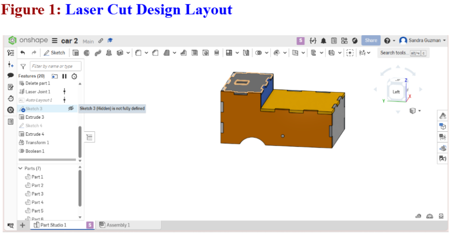
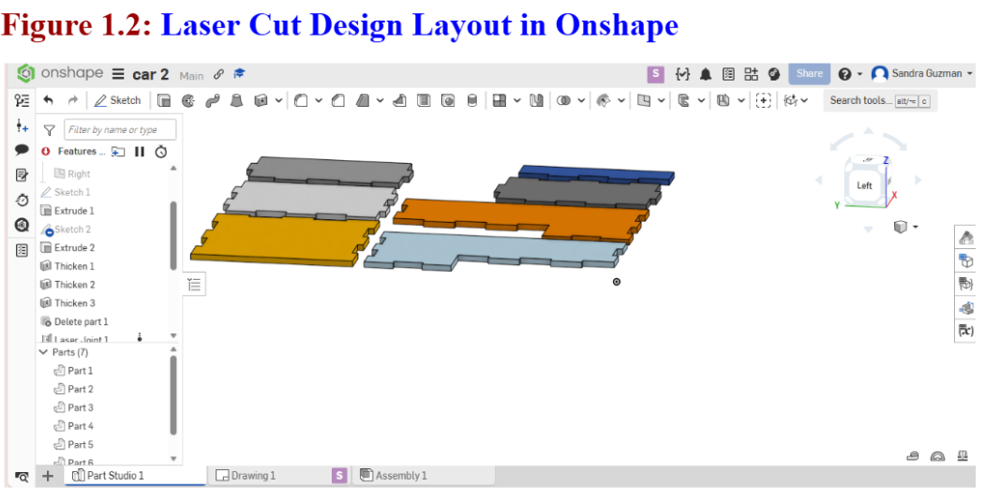
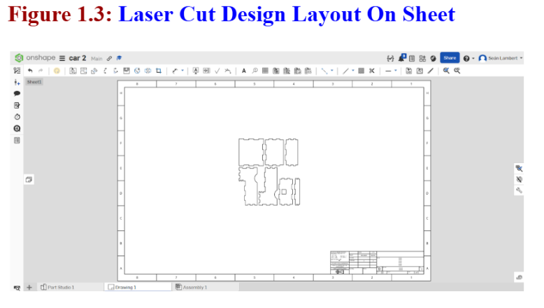
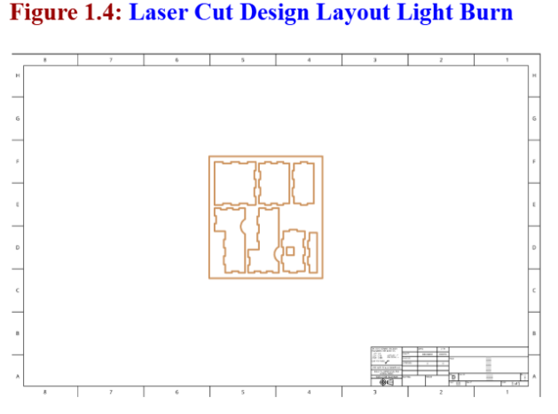
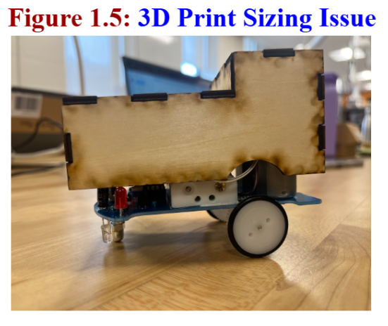
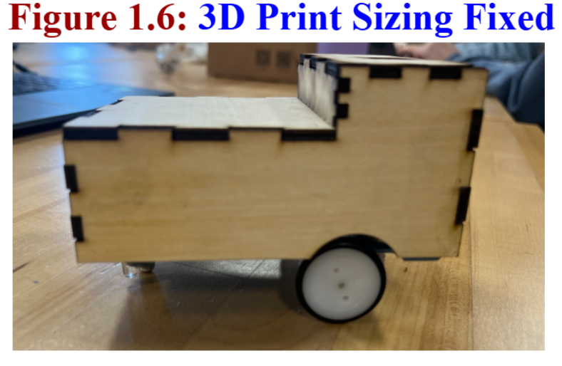

Step 1: Add the custom features needed for laser-cut design. In the CAD program Onshape, open Custom Features and add the FeatureScript tools called Laser Joint and Auto Layout. The Laser Joint feature automatically creates finger joints or tabs that allow laser-cut pieces to fit together. Auto Layout arranges the parts efficiently so they can be cut from a flat sheet of material. Step 2: Create the base sketch of the robot body. Select Sketch, choose the Top Plane, and use the Center Point Rectangle tool to draw the main body shape. Enter the correct dimensions so the design matches the measurements of the robot. Then use the Extrude feature to give the sketch thickness, turning the 2D shape into a 3D part. Step 3: Use the Thicken tool to create the wall structure of the part. Select Thicken, choose New, and apply it to the opposite sides of the model while flipping the direction inward. Repeat this process for the bottom surfaces, but do not apply it to the top. This creates structural walls while keeping the top open. Step 4: Delete the bottom opening of the robot body so the structure forms the correct enclosed shape needed for the design. Step 5: Apply the Laser Joint feature. Select the Laser Joint option from the top-left toolbar and enable Automatic with Adaptive Pin Sizing. Highlight the entire model to apply the joints. This automatically generates tab-and-slot joints that will allow the pieces to fit together precisely after laser cutting. See Figure 1.

Step 6: Arrange the parts for cutting. Highlight the entire sketch and select Auto Layout. This feature spreads the parts across the sheet and adjusts spacing so they fit efficiently on the material used for laser cutting. See Figure 1.2.

Step 7: Create a technical drawing. Click the plus (+) icon at the bottom of the screen and select Create Drawing. Choose the ANSI-D-MM template (.dwt) and click OK. This creates a formatted drawing sheet that will hold the laser-cut layout. See Figure 1.3.

Step 8: Insert the design into the drawing. Go to Part Studio, select Part 1 Studio, and use Insert View to place the part onto the drawing sheet. Adjust and drag the view so the laser-cut layout fits properly on the page. See Figure 1.4

Step 9: Export the file for laser cutting. Click Export, choose the DXF format, and export the file. The DXF format is commonly used for laser cutting because it preserves the exact vector outlines of the parts. Finally, open the exported file in LightBurn. Save the file onto a hard drive as a DXF file, which prepares it for the laser cutter. The file can now be loaded into the laser machine and used to cut the parts accurately from the selected material. After the first laser cut, my partner and I realized that the model was too small on the sides, which meant the dimensions did not properly match the robot’s actual size. To fix this issue, we went back into the CAD model and readjusted the dimensions by adding 5 mm to each side. This modification increased the width of the design so the parts would fit correctly. After making the adjustment, the model was ready to be exported and prepared again for printing. See Figure 1.5.

